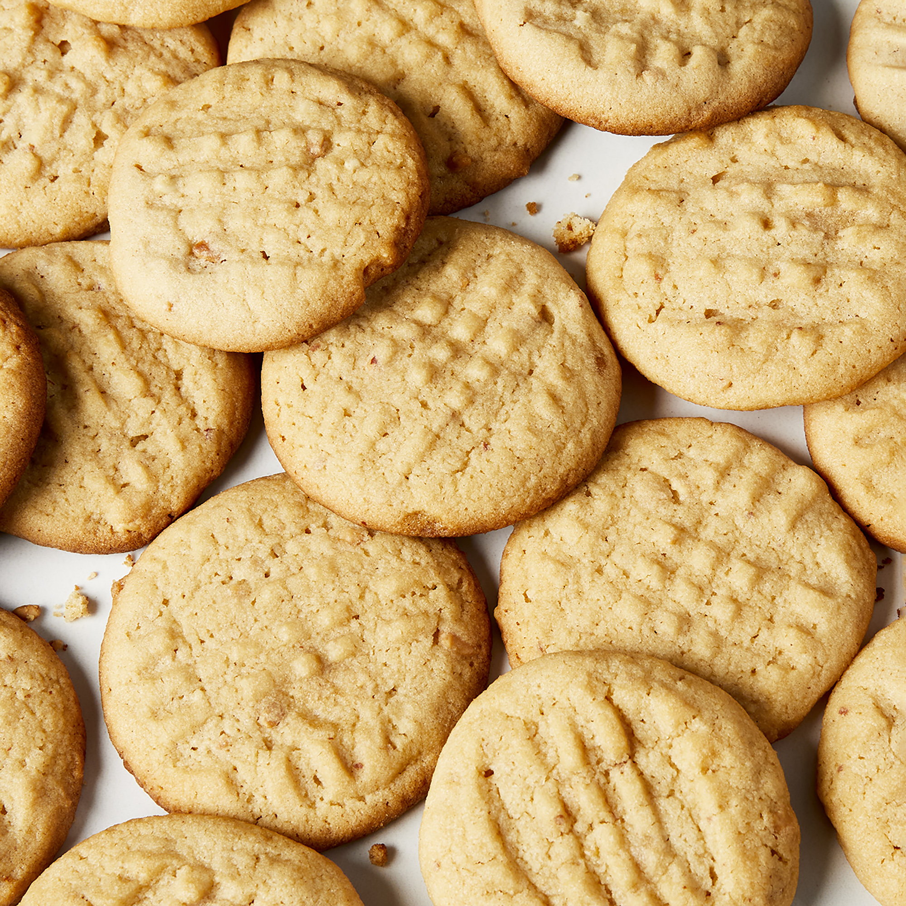

Classic Peanut Butter Cookies

Description
Makes great cookies!
Ingredients
- 1 cup unsalted butter
- 1 cup crunchy peanut butter
- 1 cup white sugar
- 1 cup packed brown sugar
- 2 large eggs
- 2,5 cups all-purpose flour
- 1 teaspoom baking powder
- 1/2 teaspoon salt
- 1,5 teaspoons baking soda
Directions
Cream butter, peanut butter, and sugars together in a bowl;
beat in eggs.
n a separate bowl, sift flour, baking powder, baking soda,
and salt; stir into butter mixture. Put dough in refrigerator
for 1 hour.
Roll dough into 1 inch balls and put on baking sheets.
Flatten each ball with a fork, making a crisscross pattern.
Bake in a preheated 375 degrees F oven for about 10 minutes
or until cookies begin to brown.
Nutrition Facts
Per Serving: 252 calories; protein 4.5g; carbohydrates
29.7g; fat 13.6g; cholesterol 35.8mg; sodium 209.4mg.
Home Page